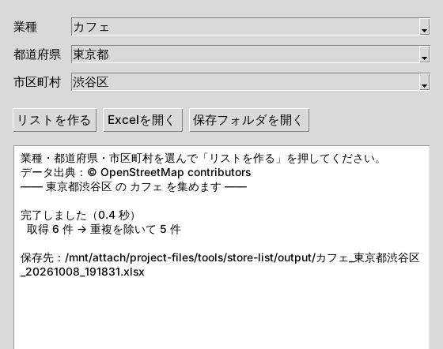

← 制作実績一覧へ戻る
完成 v0.3
店舗・企業リスト自動作成ツール
業種と地域をプルダウンで選ぶだけで、店舗の一覧をExcelに作るツールです。同じ条件でもう一度実行すると、新しく見つかった店と、なくなった店に色がつきます。

制作した理由
営業先のリストづくりや、地域のお店の調査では、店舗の情報を1件ずつ検索してExcelに書き写す作業がよく発生します。件数が増えるほど時間がかかり、写し間違いも起きやすい作業です。これを自動化すれば、速く・多く・ミスなくリストを作れると考えて作りました。
できること
- 業種・都道府県・市区町村をプルダウンで選ぶだけで、店名・住所・電話・URL・営業時間・業種をExcelに一覧化
- 重複は自動で削除し、見つからない項目には「なし」と記入
- 同じ条件で再実行すると、新しい店を緑、なくなった店を灰色で表示
- 住所が登録されていない店は、位置情報から「〇〇付近」と町名を補完
- 確認用の検索リンクと、項目ごとの入力率を一緒に出力
出力イメージ（2回目の実行結果）
下の表は架空のデータで作った見本です。
| 状態 | 店名 | 住所 | 電話 | URL |
|---|---|---|---|---|
| 新規 | 新規オープン カフェひなた | 北海道札幌市東区北十六条東1丁目 | 011-000-0007 | あり |
| 継続 | サンプル珈琲 本店 | 北海道札幌市中央区北一条西二丁目1 | 011-000-0001 | あり |
| 継続 | テスト喫茶 ことり | 北海道札幌市北区北七条西5丁目 | 011-000-0002 | なし |
| 継続 | 架空ロースタリー | 札幌市南区 | なし | あり |
| なくなった | ダミーカフェ もり | 北海道札幌市東区北六条東四丁目付近 | なし | なし |
制作過程
- アイデア案件の傾向を調べ、「リスト作成」を自動化するテーマに決定
- 試作指定した市のカフェ一覧をExcelに出すところまで作成
- 改善前回との差分の色分け、プルダウンでの地域選択、住所の補完を追加
- 完成実際のデータで動作を確認して v0.3 として完成
工夫したポイント
- 規約を守れるデータだけを使う：自動取得が認められているオープンデータ（OpenStreetMap）を使い、Googleマップなど規約で禁止されているサイトは使っていません
- 同じ名前の市を取り違えない：「府中市」のように複数の都道府県にある地名でも、都道府県の中から探すようにしました
- すぐ使える：初回起動時に必要な部品を自動で準備するので、Pythonが入っていればそのまま動きます
制作結果
岩手県盛岡市のレストランで実行したところ、223件のリストができました。もとのデータで住所が入っていたのは1件（0.4%）でしたが、町名の補完によって223件すべてに住所の目安が入りました。2回目の実行では、差分の判定（新規0件・なくなった0件）が正しく動くことも確認しています。
今後の課題
- 電話・URL・営業時間はオープンデータに登録が少なく、地域によっては数%にとどまります。確認用リンクから手で補う運用を想定しています
- 補完した住所は町名までの目安で、番地は含みません
データの出典
© OpenStreetMap contributors（ODbL）／Geolonia 住所データ（CC BY 4.0）